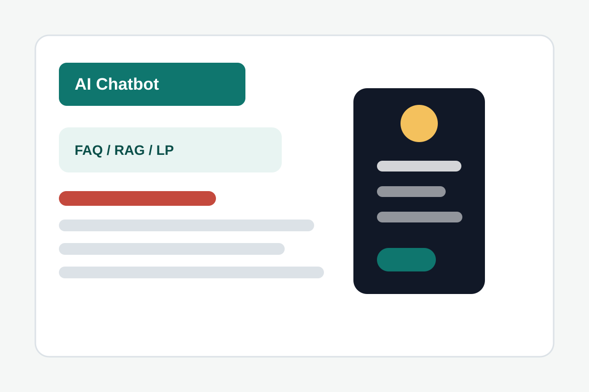
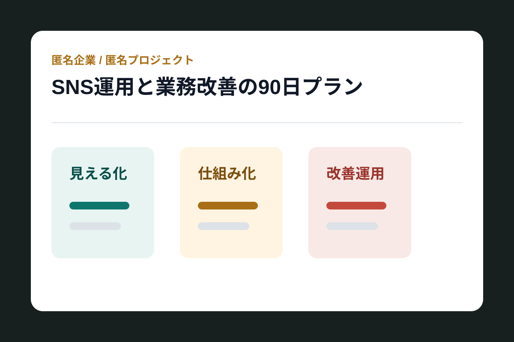
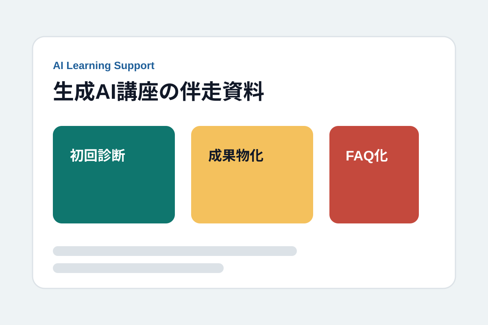
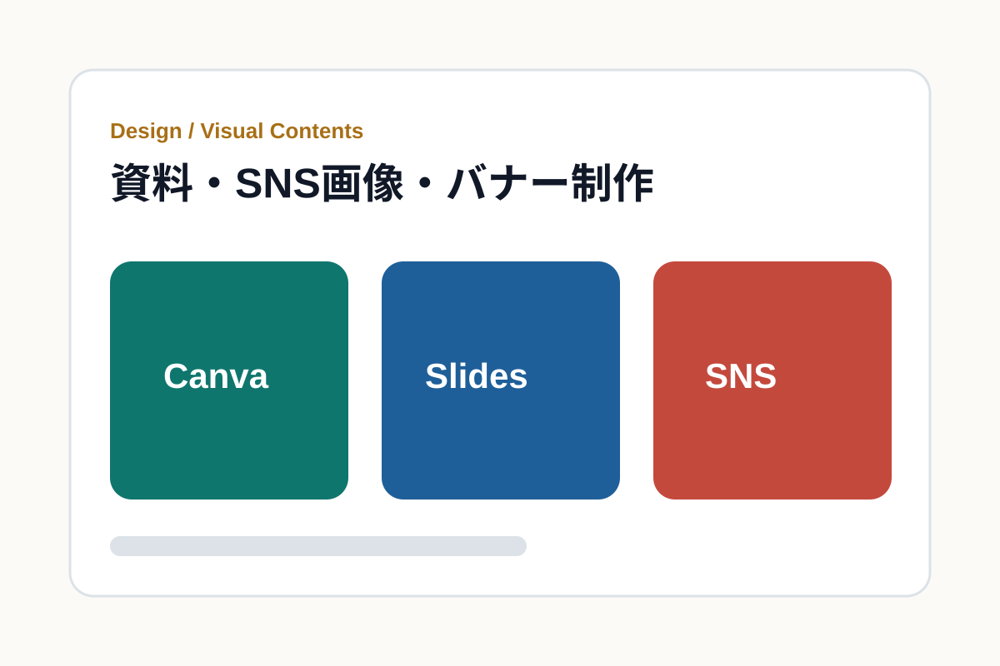

制度や専門情報を読み取り、相手のリテラシーに合わせて説明資料・判断材料へ変換します。
For business owners / teams
「大手に頼むほどではないけれど、きちんと形にしたい」相談に向いています。
本業では都市計画・まちづくりコンサルタントとして、官公庁や国際機関向けの調査・資料作成・制度設計に従事。 副業では、マーケティング支援、SNS運用、AI活用、デザイン制作を、実務で使える納品物として設計します。
高単価商材のアフィリエイト運用経験をもとに、検索意図とCV導線からコンテンツを組み立てます。
ChatGPTやClaudeを業務で使い、プロンプト設計、チャットボット、RAG、ツール開発へ展開しています。
Services
対応できる業務
「AIを使いたい」「SNSを整えたい」「説明資料を作りたい」を、依頼しやすい単位に分けています。
AIチャットボット・RAG構築
顧客対応、社内FAQ、マニュアル検索など、聞けば答えてくれる業務用チャットボットを設計します。
- Dify / ChatGPT / Claudeの選定
- プロンプト設計と回答品質の検証
- 社内資料・FAQをもとにした応答設計
AI活用・業務効率化サポート
文書作成、リサーチ、メール対応、レポート作成など、日常業務にAIを組み込む流れを整えます。
- ChatGPT / Claudeの使い方レクチャー
- Claude Code / Pythonでのツール試作
- AI利用時の情報管理ルール整理
マーケティング・SNS運用
検索意図、ターゲット、投稿企画、CTAをつなぎ、ユーザーが次に動きやすい導線を作ります。
- SEO記事設計・CV導線構築
- SNS投稿の企画・作成・改善
- toB / toC向け訴求整理
提案資料・レポート・マニュアル制作
専門的な内容を、発注者・顧客・社内メンバーが理解しやすい資料へ翻訳します。
- 企画書・提案書・報告書
- ユーザー対応マニュアル・FAQ
- 一般向けリライト・英日対応
カスタマーサクセス設計
ユーザーが迷いやすい箇所を整理し、オンボーディング、ヘルプコンテンツ、対応文面に落とし込みます。
- オンボーディング資料
- ユーザーコミュニケーション設計
- 認識ズレを減らす文章設計
デザイン制作・ビジュアル設計
CanvaやAI画像生成を使い、SNS画像、バナー、提案資料の見え方を整えます。
- Canvaでのバナー・SNS投稿画像
- Midjourney / DALL-E等の画像生成
- Figmaの基本操作・資料ビジュアル設計
Works
サービス提供例・制作実績
AI活用、マーケティング、資料制作、デザイン制作でどのような支援ができるかを、 相談背景、担当範囲、使用ツール、納品物の形で紹介します。

AI活用 / 個人開発
AIチャットボット・LP制作の実装経験
- 課題
- AI活用を提案だけで終わらせず、要件定義から実装・デプロイまで手触りを持って検証する必要があった。
- 担当範囲
- 企画、実装、デバッグ、プロンプト検証、DB・認証連携、Vercelへのデプロイ。
- 使用技術
- Python、Django、JavaScript、React / Next.js、Claude API、OpenAI API、Supabase、Vercel、GitHub。
- 成果・納品物
- AIチャットボット試作、自作LP、Claude Codeを用いた開発フローの実践記録。

マーケティング / SNS運用 / PM提案
SNS集客支援の品質・効率を整える90日プラン
- 課題
- クライアント増加に伴い、品質担保、業務効率化、情報散在への打ち手を示す必要があった。
- 担当範囲
- 募集要項の読解、課題仮説、PMの立ち位置、ダッシュボード案、想定Q&Aの作成。
- 使用ツール
- Google Sheets / GAS想定、Claude Code、PowerPoint。
- 成果・納品物
- 面談で議論できる提案資料、読み原稿、質問回答メモを整備。

AIメンター / 提案資料
生成AI講座の伴走品質を伝える資料
- 課題
- 受講生がAIに触れるだけで終わらず、仕事や副業で小さな成果物を作る支援方針を伝える必要があった。
- 担当範囲
- 案件理解、市場・競合整理、初回診断、相談運用、品質管理の提案、トークメモ作成。
- 使用ツール
- Claude Code / Codex、Keynote、PowerPoint、外部情報リサーチ。
- 成果・納品物
- 10枚構成の資料と、相談時に使える論点メモを作成。

デザイン制作 / 提案資料
Canva・資料制作案件向けの実行計画と制作サンプル
- 課題
- 制作リソース不足の現場に対し、指示理解、レビュー、納品のサイクルを短く安定して回せることを示す必要があった。
- 担当範囲
- 案件理解、制作フロー、初週の進め方、進捗共有、Canva中心の対応範囲整理。
- 使用ツール
- Canva、Figma基本操作、Illustrator簡易修正想定、PowerPoint。
- 成果・納品物
- 業務委託向け提案資料、バナー・SNS画像・資料ビジュアル制作のサンプル群。
Process
初回相談から納品までの進め方
依頼内容が固まりきっていない段階でも、目的と納品物を一緒に整理してから進めます。
-
01
相談内容の整理
目的、対象者、現状の困りごと、予算、納期、既存資料の有無を確認します。
-
02
使いどころの提案
AI、SNS、資料、FAQ、CS導線のうち、最初に効果が出やすい箇所を絞ります。
-
03
初版作成・レビュー
構成案、プロンプト、資料初稿、投稿案、チャットボット試作を早めに出します。
-
04
納品・運用メモ化
納品物に加えて、使い方、更新方法、次の改善候補をまとめます。
FAQ
よくいただくご相談
AIやITに詳しくなくても依頼できますか？
大丈夫です。専門用語を避け、使う場面、入力する情報、確認すべき点まで分かる形で説明します。
まだ依頼内容が固まっていなくても相談できますか？
問題ありません。「AIで何かできないか」「SNSや資料を整えたい」段階から、最初の成果物を一緒に決めます。
予算が限られていても相談できますか？
ご予算に合わせて、診断だけ、設計だけ、初稿作成までなど、切り出しやすい範囲をご提案します。
Profile
専門内容を、相手が動ける言葉と資料に翻訳します。
地方公務員として国際交流・都市政策を担当し、現在は都市計画・まちづくりコンサルタントとして 官公庁向け調査、資料作成、海外案件推進に携わっています。
- 氏名
- 天田 悠仁
- 経歴
- 地方公務員（国際交流・都市政策）→ 都市計画コンサルティング会社（官公庁向け調査・資料作成・海外案件推進）。
- 対応領域
- AI活用、マーケティング、SNS運用、コンテンツ制作、カスタマーサクセス、デザイン制作、ECサイト構築・運用。
- 主なスキル
- プロンプト設計、Dify、Claude Code / Codex、Python、Django、JavaScript、React / Next.js、Supabase、Vercel、GAS、Canva、Figma基本操作。
- 資格・語学
- 宅地建物取引士、FP3級、英検準1級、TOEIC L&R 850、英国長期留学（2019〜2020）。
Contact
まずは「こんなことがしたい」だけでもお送りください。
目的、希望納期、ご予算、既存資料の有無を添えていただけると、 初回返信で進め方と切り出し範囲を具体化しやすくなります。